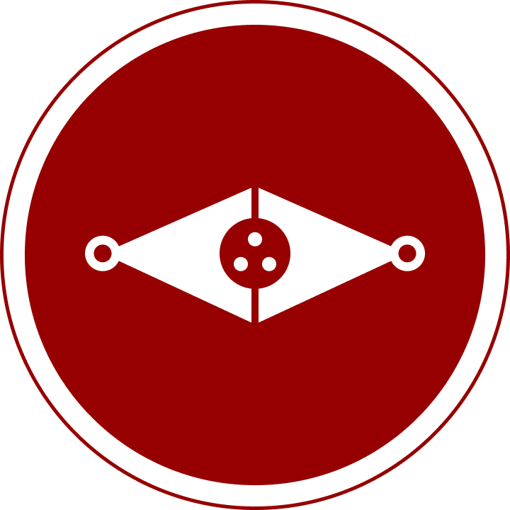

HISTORY AND APPLICATIONS OF K-4

Tasked with designing the most capable instrument of
death The System had ever seen, Dr. Amanda Holliday,
head of mechanical and computer engineering and design
at Khvostov Headquarters, knew what she was doing by
spearheading the K-4 Initiative: A technologically superior
android that was designed and programmed with a single
prime directive. That directive was codenamed “K-4” and
guided the android’s functions. These functions include
and were limited to neutralizing, terminating, expunging,
destroying, and killing. Unlike other military units, the
K-4 Units were given no medical functions, no search and
rescue functions, and no informational assistance functions.
The K-4 Unit, when deployed, had one job: Purge.
The K-4 Unit, when deployed, had one job: Purge.
77 · 8342562 · 071702 · 101916 · 44